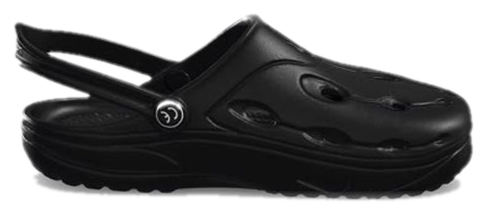

Ein minimalistisches Objekt aus patentiertem Duflex-Material. Flexibel wie eine zweite Haut. Leicht. Wasserfest.
Entdecken
Die Sohle biegt sich in alle Richtungen mit – ein natürliches Abrollverhalten, das dem Barfußgehen nachempfunden ist.
Das offenzellige Material federt jeden Schritt ab und gibt die Energie kontrolliert zurück.
Nimmt kein Wasser auf, trocknet schnell und bleibt dauerhaft geruchsneutral.
„Endlich Schuhe, die mit dem Fuß mitgehen – statt gegen ihn zu arbeiten.“Petra S. — Trägerin